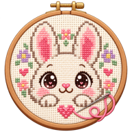

Your pattern, beside you
Import a Stitchy backup from Files. Your chart and progress stay on this device and work offline.
In Safari, tap Share → Add to Home Screen to install Stitchy.

Import a Stitchy backup from Files. Your chart and progress stay on this device and work offline.
In Safari, tap Share → Add to Home Screen to install Stitchy.